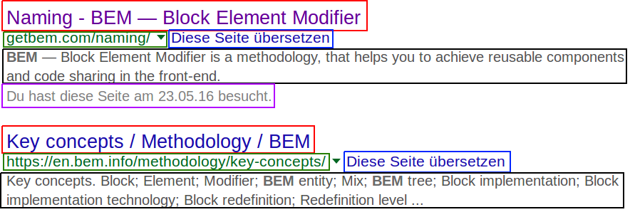
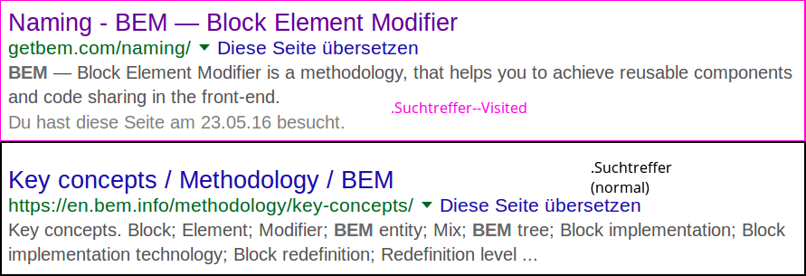

Einführung in die Webprogrammierung
Sitzung 10: Roundup
Oliver Pohl: opohl@bbaw.de
Agenda
- Fragen
- Warmup
- Roundup
- Kahoot
- Evaluation
- Siegerehrung
Fragen?
Warmup
Ordnen nach:
- HTML
- CSS
- JS
- Terminal
Elemente?
Dokument Struktur verleihen
HTML-Bausteine aus 3 Bestandteilen
| Start-Tag | Inhalt | End-Tag |
|---|---|---|
| <h1> | Überschrift 1 | </h1> |
| <p> | Absatz | </p> |
Struktur, Darstellung, Funktion
| Typ | Technologie | |
|---|---|---|
| Struktur | HTML | HyperText Markup Language |
| Darstellung | CSS | Cascading Stylesheets |
| Funktion | JS | JavaScript |
Attribute
Bereits gelernt: href, src
Zusatzinformation im HTML-Element

| Element | Attributsname | Attributswert |
|---|---|---|
| a | href | www.hu-berlin.de |
| img | src | img/hu-logo-small.png |
ls - Verzeichnisinhalt anzeigen
$ lsZeigt aktuellen Verzeichnisinhalt an$ ls
Bilder
Dokumente
Downloads
Musik
Projekte
Schreibtisch
Videos$ ls Bilder
Urlaub
Katzen.png
Hund.jpg
Zeigt Verzeichnisinhalt im Bilder-Verzeichnis ancd - Verzeichnis wechseln
Change Directory
$ cd BilderIns Bilder-Verzeichnis wechseln$ cd ..Ins übergeordnete Verzeichnis zurückwechseln$ cd ~Ins Home-Verzeichnis zurückwechselncp - Kopieren
Copy
$ ls
Urlaub
Katzen.png
Hund.jpg
Zeigt Verzeichnisinhalt im Bilder-Verzeichnis an$ cp Hund.jpg WauWau.jpgKopiert Hund.jpg und benennt die Kopie WauWau.jpg$ cp Hund.jpg ../Kopiert Hund.jpg ins übergeordnete Verzeichnis (ohne Umbennenung)mv - Verschieben und Umbenennen
Move
$ mv Hund.jpg Urlaub/Verschiebt Hund.jpg ins Urlaub-Verzeichnis$ mv Katzen.png Miau.pngBenennt Katzen.png in Miau.png um$ mv * UrlaubVerschiebt alle Dateien ins Urlaub-Verzeichnis$ mv *.png ../Verschiebt alle PNG-Dateien ins übergeordnete Verzeichnismkdir - Verzeichnis erstellen
Make Directory
$ ls
Urlaub
Katzen.png
Hund.jpgZeigt Verzeichnisinhalt im Bilder-Verzeichnis an$ mkdir TiereErstellt Tiere-Verzeichnis$ ls
Tiere
Urlaub
Katzen.png
Hund.jpg$ mv Hund.jpg Katzen.jpg Tiere/Verschiebt die Bilder ins Tiere-Verzeichnisrm - Löschen
Remove
$ rm Katzen.pngLöscht Katzen.png$ rm -r TiereLöscht das Tierverzeichnis rekursivless - Textdateien ansehen
$ less index.htmlZeigt Inhalt von index.html anNavigation
| Taste | Wirkung |
|---|---|
| J | Nach unten scrollen |
| K | Nach oben scrollen |
| Q | Beenden |
CSS-Syntax
selektor { gestaltungsattribut: wert; }Grundlegende CSS SyntaxBeispiel
div {
background-color: red;
color: white;
margin: 10px;
}
Die Hintergrundfarbe für alle div-Elemente ist rot.
Texte in divs haben eine weiße Schrift.
Divs haben einen äußeren Abstand von 10 Pixeln zu allen Seiten.CSS in Datei
Ausgelagert in externe Datei und ins HTML-Dokument einbinden
div {
color: white;
background-color: red;
}
Ausgelagerte CSS-Datei: styles.css
<html>
<head>
<link rel="stylesheet" href="styles.css">
</head>
<body>
<div>A</div>
<div>B</div>
<div>C</div>
</body>
</html>
CSS im Head
A
B
C
Einbindungsmöglichkeiten
| Inline | Head | Extern | |
|---|---|---|---|
| Trennung zu HTML | |||
| Lesbarkeit | |||
| Nutzbarkeit in Projekten | |||
| Fazit |
BEM & Flexbox
Block Entity Modifier
- Block: Wiederkehrende Komponente
- Suchtreffer
- Info-Boxen
- Overlays
- Entity: Teilelement in dieser Komponente
- Titel vom Treffer
- Metadaten
- Links
- Modifier: Alternativer Status der Komponente
- Bereits angeklickt
- Zugriff nicht möglich
- Verliehen
BEM: Entities
.Suchtreffer__Titel.Suchtreffer__Link.Suchtreffer__Translate.Suchtreffer__Snippet.Suchtreffer__Visited_at
BEM: Modifier
- Alternativer Status:
.Suchtreffer--Visited - Normaler Status:
.Suchtreffer
Flexbox: Beispiel
Flexbox Aufbau
JSON
JSON - Syntax
Key-Value-Prinzip
- Alle Daten müssen von {} umschlossen sein
- Keys müssen in Anführungszeichen stehen
- Values müssen in Anführungszeichen stehen, außer sie sind Zahlen
- Nach jedem Key-Value-Pair folgt ein Komma, außer beim letzten
- Zur Leserlichkeit: Key-Value-Pairs einrücken
Liste an Werten in JSON
- Werte in einer Liste können einfache Werte, weitere Listen oder JSON-Objekte sein
- Aber: Zur Übersicht und Funktionalität sollte der Datentyp gleich sein
Geschachtelte Strukturen in JSON
- JSON-Objekte können beliebig tief geschachtelt werden
JavaScript
Einbindung Extern (im Body)
- Verlinkung am Ende des Bodys ist besser
- DOM-Zugriff direkt möglich
- Daher keine extra-Befehle nötig
JavaScript vs. jQuery
- Gleiche Selektor-Syntax wie CSS
- Gleiche Hierarchien
- Einfachere Syntax
$("button") == jquery("button")
Button Click
Element via jQuery auswählen
jQuery Libraries
DataTables: Initialisierung
DataTables via JSON-Datei
Tooltipster: Einfaches Beispiel
Tooltipster: HTML-Tooltip
git & npm
Bootstrap
KAHOOT
www.kahoot.it
Evaluation
Siegerehrung
Platz 5
Cline - 108084
Platz 4
asp - 111351
Platz 3
Kite - 120871
Platz 2
KaladinSolo - 134615
Platz 1
NielsBohr - 136225
Dankeschön
 Oliver Pohl, Einführung in die Webprogrammierung (SoSe 2016), Sitzung 10: Roundup. -- Anonyme Fragen: http://goo.gl/dDkMeL
Oliver Pohl, Einführung in die Webprogrammierung (SoSe 2016), Sitzung 10: Roundup. -- Anonyme Fragen: http://goo.gl/dDkMeL